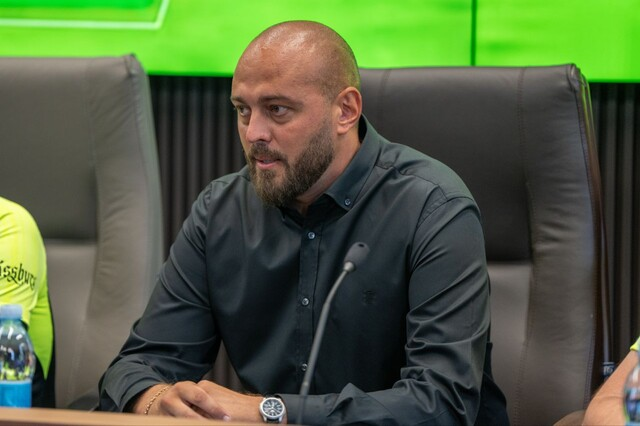

Основна інформація
ФК ПОЛІССЯ
«Полісся» — український футбольний клуб із Житомира. Заснований 1959
року. Припинив виступи в чемпіонатах України в 2005 році. Відновлений
2016 року як МФК «Житомир». На початку 2017 року повернув назву
«Полісся». Починаючи з сезону 2023/24 виступає в українській
Прем'єр-лізі.
Побудова нового стадіону
Об’єкт заплановано звести в центрі міста, на зручному транспортному вузлі між великими населеними пунктами.Концепція стадіону розроблена на основі аналізу попередніх аналогічних споруд та включає три ключові напрями: комерційний, соціальний та дозвіллєвий.Основні елементи стадіону: спортивне ядро, трибуни на 12300 місць, VIP-зони, приміщення для преси, укриття, комерційні блоки з адміністрацією, магазинами, фан-шопом, музеєм, а також кіберспортивною ареною, яку можна трансформувати відповідно до потреб.
В очікуванні новогу матчу
«Полісся» пропустило на 20-й хвилині поєдинку. У другому таймі «Яблонець» відправив у ворота представника УПЛ ще два м'ячі. «Полісся» відповіло голом престижу на 84-й хвилині. Автором першого голу команди у 2025 році став Лєднєв.
Новини
Імад Ашур про матч з "Яблонцем" та підготовку команди на зборах:
